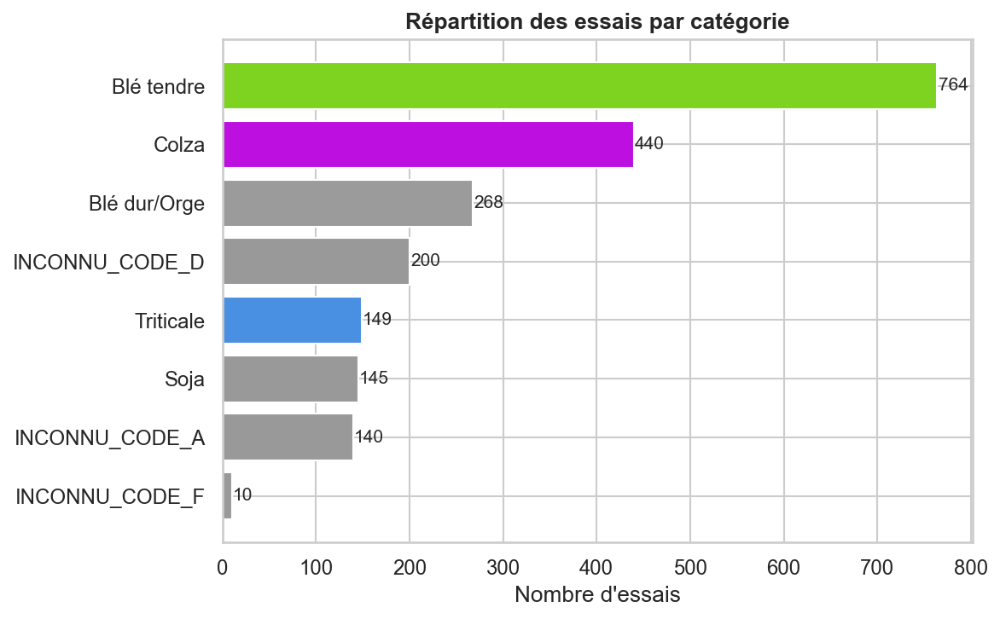

Dashboard analytique
Tableaux filtrables, carte interactive et graphiques statiques documentés. Les catégories inconnues sont isolées visuellement et les limites du modèle sont présentées sans surpromesse.
Graphiques lisibles à toute largeur
Cliquez sur une image pour l’ouvrir à sa résolution originale. Les libellés inconnus reflètent les limites du référentiel source.
{kind=link}



Tableaux interactifs
Recherche, pagination, nombre de résultats et export du jeu filtré.
Des performances utiles, mais mesurées
Test temporel final sur 2018 : 12 306 observations, sans chevauchement des groupes d’essais avec l’entraînement 2015–2017.
R² 0,4548 · MAE 13,2904
Le modèle explique environ 45 % de la variabilité. La MAE améliore la baseline moyenne (18,6639), sans justifier une utilisation décisionnelle autonome.
F1 0,7645 · exactitude 0,7551
Classe positive : rendement YD15QH ≥ 80 q/ha. Matrice : 4 401 vrais négatifs, 2 534 faux positifs, 480 faux négatifs et 4 891 vrais positifs.
Définitions des métriques
Carte interactive des essais
La base inclut des régions hors France, notamment TOLNA et BARANYA en Hongrie. Elles ne sont pas masquées afin de préserver la traçabilité.